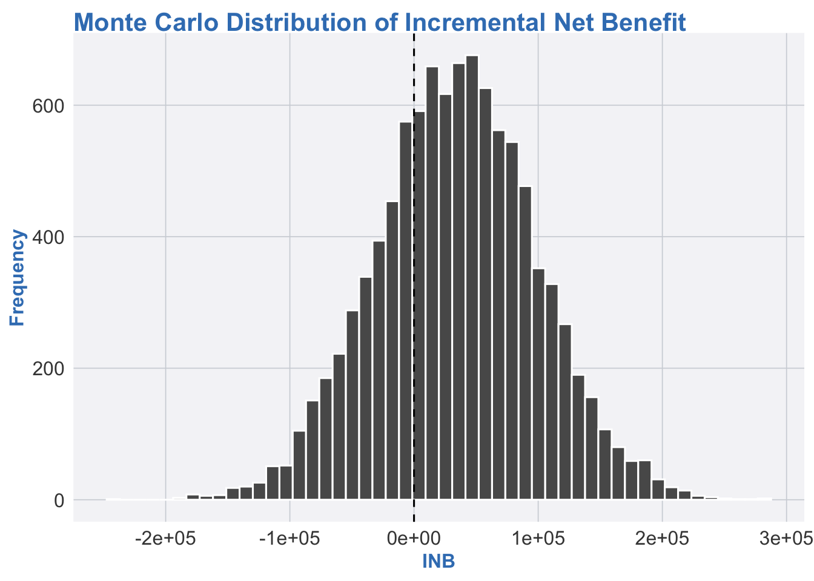

3. Example in R: Monte Carlo for a toy cost-effectiveness model
We’ll create a simple scenario with two treatments:
Standard care (A),
New treatment (B).
We assume:
Costs and QALYs have parameter uncertainty,
We want to estimate:
Expected incremental cost and QALY,
Distribution of incremental net benefit,
Probability that B is cost-effective at a given willingness-to-pay (WTP).
Code
library(ggplot2)source("R/theme-heor-book.R") theme_set(theme_heor_book())set.seed(123)n_sim <-10000# number of Monte Carlo sampleslambda <-100000# willingness-to-pay per QALY (e.g., $100,000)# Assume uncertain mean costs and QALYs for each strategy:# Strategy A (standard care)costA_mean <-20000; costA_sd <-3000qalyA_mean <-3.0; qalyA_sd <-0.4# Strategy B (new treatment)costB_mean <-26000; costB_sd <-3500qalyB_mean <-3.4; qalyB_sd <-0.5# For illustration, assume normal distributions (truncated implicitly by context)costA <-rnorm(n_sim, mean = costA_mean, sd = costA_sd)costB <-rnorm(n_sim, mean = costB_mean, sd = costB_sd)qalyA <-rnorm(n_sim, mean = qalyA_mean, sd = qalyA_sd)qalyB <-rnorm(n_sim, mean = qalyB_mean, sd = qalyB_sd)# IncrementalsdC <- costB - costAdE <- qalyB - qalyA# Incremental Net Benefit (INB)inb <- lambda * dE - dC
library(ggplot2)inb_df <-data.frame(inb = inb)ggplot(inb_df, aes(x = inb)) +geom_histogram(bins =50, color ="white") +geom_vline(xintercept =0, linetype ="dashed") +labs(title ="Monte Carlo Distribution of Incremental Net Benefit",x ="INB",y ="Frequency" )

Distribution of incremental net benefit (INB) from Monte Carlo simulation.
This tiny example mirrors what full-blown PSA does in complex health decision models.
4. Strengths of Monte Carlo simulation
Handles complex models
Monte Carlo works even when your model is non-linear, has interactions, and has no closed-form solution. As long as you can simulate outcomes, you can approximate expectations.
Propagates parameter uncertainty
By sampling from parameter distributions, you propagate uncertainty through the model to outcomes — critical for credible decision analysis.
Flexible and modular
You can add new parameters, structures, or outcomes without changing the basic Monte Carlo logic. It’s easy to extend models as your HEOR questions evolve.
Naturally supports VOI and scenario analysis
Monte Carlo output can be reused for value-of-information analysis, scenario comparisons, and sensitivity analyses.
5. Limitations of Monte Carlo simulation
Computationally expensive
Large models with many individuals, long time horizons, or many parameters can require hundreds of thousands or millions of simulations. This can be slow or memory-intensive.
Garbage in, garbage out
If your parameter distributions are poorly specified, biased, or missing key structural uncertainty, the Monte Carlo results will faithfully propagate those problems.
Monte Carlo error
With finite \(N\), there is simulation noise. You need enough simulations to reduce Monte Carlo error, especially in tail probabilities or VOI calculations.
Can obscure model structure
Because everything is simulated, it can be easy to forget about underlying structural assumptions. It’s important to complement simulation with conceptual checks and simpler analytic approximations when possible.
6. Why Monte Carlo matters for HEOR and health policy
Monte Carlo simulation is one of the foundational tools in HEOR because:
Almost all probabilistic cost-effectiveness analyses use it,
Complex decision models (Markov, microsimulation, DES) rely on it,
Policy questions often hinge on uncertainty, not just point estimates.
Examples:
PSA in cost-effectiveness modeling
Varying costs, utilities, transition probabilities, and other parameters to obtain distributions of ICERs and cost-effectiveness acceptability curves.
Budget impact and forecasting
Simulating ranges of future cost and utilization under different scenarios (e.g., different uptake patterns, adherence, or price trajectories).
Value of information
Estimating how much we would gain (in expected net benefit) if we could eliminate uncertainty about specific parameters or groups of parameters.
Risk and capacity planning
Simulating possible demand trajectories, bed occupancy, or resource usage to assess the risk of hitting capacity thresholds.
In short: if your HEOR or policy question involves uncertainty, there’s a good chance Monte Carlo is either already in the background — or should be. 😄
7. Further reading
Briggs, Claxton, & Sculpher – Decision Modelling for Health Economic Evaluation.
Classic reference for Monte Carlo simulation in health economic models, including PSA.
Doubilet et al. (1985). Probabilistic Sensitivity Analysis Using Monte Carlo Simulation. Medical Decision Making.
Early description of Monte Carlo-based PSA in medical decision analysis.
O’Hagan et al. – Uncertainty in Health Economic Evaluation.
Focuses on handling parameter and structural uncertainty in health economic models.
Kroese et al. – Why the Monte Carlo Method is so Important Today. Wiley Interdisciplinary Reviews.
A broader, non-HEOR perspective on Monte Carlo’s importance in modern modeling.
Source Code
---title: "Monte Carlo Simulation: Asking \"What If?\" 10,000 Times"---# 1. Introduction: when your model is allergic to closed-form solutionsIn a perfect world, every model would be solved with a neat little formula:- You write down some equations,- You do a bit of algebra,- Out pops the answer.In the real world (especially in HEOR), your model often looks like this:- A tangle of uncertain parameters,- A layered decision structure,- A stubborn refusal to produce a closed-form solution.Enter **Monte Carlo simulation**, which basically says:> “If I can’t solve it analytically, I’ll **simulate it a ridiculous number of times** and see what happens on average.”Instead of one deterministic answer, you get:- A distribution of possible outcomes,- Means, medians, quantiles,- Probabilities of being above/below a threshold.---# 2. Foundations: what is Monte Carlo simulation?## 2.1. The core ideaSuppose you care about some outcome $Y$ that depends on uncertain inputs $\theta$:$$Y = f(\theta),$$where $\theta$ itself is random (e.g., parameters with uncertainty). You want:- $E[Y]$ (expected outcome),- And maybe the full **distribution** of $Y$.If $f$ is complicated and $\theta$ has a non-trivial distribution, analytic solutions may be impossible.Monte Carlo says:1. Sample $\theta^{(1)}, \theta^{(2)}, \dots, \theta^{(N)}$ from the distribution of $\theta$.2. Compute $Y^{(k)} = f(\theta^{(k)})$ for each draw.3. Approximate: - $E[Y] \approx \frac{1}{N} \sum_{k=1}^N Y^{(k)}$, - Distribution of $Y$ via the empirical distribution of $\{Y^{(k)}\}$.As $N$ gets large, these approximations converge (by the **Law of Large Numbers**).## 2.2. Steps in a Monte Carlo simulationTypical steps:1. **Define the model** $f(\cdot)$ (e.g., cost-effectiveness model, risk model).2. **Specify distributions** for uncertain inputs (e.g., beta, gamma, normal).3. **Draw random samples** for each parameter.4. **Compute outputs** (costs, QALYs, net benefit, etc.).5. **Summarize results** (means, quantiles, probabilities).This general structure appears in:- Probabilistic sensitivity analysis (PSA),- Risk analysis,- Value-of-information analysis,- Complex simulation models (microsimulation, DES, etc.).---# 3. Example in R: Monte Carlo for a toy cost-effectiveness modelWe’ll create a simple scenario with two treatments:- **Standard care (A)**,- **New treatment (B)**.We assume:- Costs and QALYs have parameter uncertainty,- We want to estimate: - Expected incremental cost and QALY, - Distribution of incremental net benefit, - Probability that B is cost-effective at a given willingness-to-pay (WTP).```{r}#| label: mc-setup#| message: false#| warning: falselibrary(ggplot2)source("R/theme-heor-book.R") theme_set(theme_heor_book())set.seed(123)n_sim <-10000# number of Monte Carlo sampleslambda <-100000# willingness-to-pay per QALY (e.g., $100,000)# Assume uncertain mean costs and QALYs for each strategy:# Strategy A (standard care)costA_mean <-20000; costA_sd <-3000qalyA_mean <-3.0; qalyA_sd <-0.4# Strategy B (new treatment)costB_mean <-26000; costB_sd <-3500qalyB_mean <-3.4; qalyB_sd <-0.5# For illustration, assume normal distributions (truncated implicitly by context)costA <-rnorm(n_sim, mean = costA_mean, sd = costA_sd)costB <-rnorm(n_sim, mean = costB_mean, sd = costB_sd)qalyA <-rnorm(n_sim, mean = qalyA_mean, sd = qalyA_sd)qalyB <-rnorm(n_sim, mean = qalyB_mean, sd = qalyB_sd)# IncrementalsdC <- costB - costAdE <- qalyB - qalyA# Incremental Net Benefit (INB)inb <- lambda * dE - dC```## 3.1. Summarizing the Monte Carlo output```{r}#| label: mc-summary#| message: false#| warning: falsemc_summary <-function(x) {c(mean =mean(x),sd =sd(x),q025 =quantile(x, 0.025),q500 =quantile(x, 0.5),q975 =quantile(x, 0.975) )}dC_summary <-mc_summary(dC)dE_summary <-mc_summary(dE)inb_summary <-mc_summary(inb)dC_summarydE_summaryinb_summary```## 3.2. Probability cost-effectiveThe probability that B is cost-effective at $ \lambda $ is:$$P(\text{INB} > 0) \approx \frac{1}{N} \sum_{k=1}^N \mathbf{1}\{ \text{INB}^{(k)} > 0 \}.$$```{r}#| label: mc-pce#| message: false#| warning: falsep_ce <-mean(inb >0)p_ce```## 3.3. Visualizing the distribution of INB```{r}#| label: mc-plot#| message: false#| warning: false#| fig.cap: "Distribution of incremental net benefit (INB) from Monte Carlo simulation."library(ggplot2)inb_df <-data.frame(inb = inb)ggplot(inb_df, aes(x = inb)) +geom_histogram(bins =50, color ="white") +geom_vline(xintercept =0, linetype ="dashed") +labs(title ="Monte Carlo Distribution of Incremental Net Benefit",x ="INB",y ="Frequency" )```This tiny example mirrors what full-blown PSA does in complex health decision models.---# 4. Strengths of Monte Carlo simulation1. **Handles complex models** Monte Carlo works even when your model is non-linear, has interactions, and has no closed-form solution. As long as you can **simulate** outcomes, you can approximate expectations.2. **Propagates parameter uncertainty** By sampling from parameter distributions, you propagate uncertainty through the model to outcomes — critical for credible decision analysis.3. **Flexible and modular** You can add new parameters, structures, or outcomes without changing the basic Monte Carlo logic. It’s easy to extend models as your HEOR questions evolve.4. **Naturally supports VOI and scenario analysis** Monte Carlo output can be reused for value-of-information analysis, scenario comparisons, and sensitivity analyses.---# 5. Limitations of Monte Carlo simulation1. **Computationally expensive** Large models with many individuals, long time horizons, or many parameters can require **hundreds of thousands or millions** of simulations. This can be slow or memory-intensive.2. **Garbage in, garbage out** If your parameter distributions are poorly specified, biased, or missing key structural uncertainty, the Monte Carlo results will faithfully propagate those problems.3. **Monte Carlo error** With finite $N$, there is **simulation noise**. You need enough simulations to reduce Monte Carlo error, especially in tail probabilities or VOI calculations.4. **Can obscure model structure** Because everything is simulated, it can be easy to forget about underlying structural assumptions. It’s important to complement simulation with conceptual checks and simpler analytic approximations when possible.---# 6. Why Monte Carlo matters for HEOR and health policyMonte Carlo simulation is one of the **foundational tools** in HEOR because:- Almost all **probabilistic cost-effectiveness analyses** use it,- Complex decision models (Markov, microsimulation, DES) rely on it,- Policy questions often hinge on uncertainty, not just point estimates.Examples:1. **PSA in cost-effectiveness modeling** Varying costs, utilities, transition probabilities, and other parameters to obtain distributions of ICERs and cost-effectiveness acceptability curves.2. **Budget impact and forecasting** Simulating ranges of future cost and utilization under different scenarios (e.g., different uptake patterns, adherence, or price trajectories).3. **Value of information** Estimating how much we would gain (in expected net benefit) if we could eliminate uncertainty about specific parameters or groups of parameters.4. **Risk and capacity planning** Simulating possible demand trajectories, bed occupancy, or resource usage to assess the risk of hitting capacity thresholds.In short: if your HEOR or policy question involves **uncertainty**, there’s a good chance Monte Carlo is either already in the background — or should be. 😄---# 7. Further reading1. **Briggs, Claxton, & Sculpher – _Decision Modelling for Health Economic Evaluation_.** Classic reference for Monte Carlo simulation in health economic models, including PSA.2. **Doubilet et al. (1985). _Probabilistic Sensitivity Analysis Using Monte Carlo Simulation._ Medical Decision Making.** Early description of Monte Carlo-based PSA in medical decision analysis.3. **O’Hagan et al. – _Uncertainty in Health Economic Evaluation._** Focuses on handling parameter and structural uncertainty in health economic models.4. **Kroese et al. – _Why the Monte Carlo Method is so Important Today._ Wiley Interdisciplinary Reviews.** A broader, non-HEOR perspective on Monte Carlo’s importance in modern modeling.